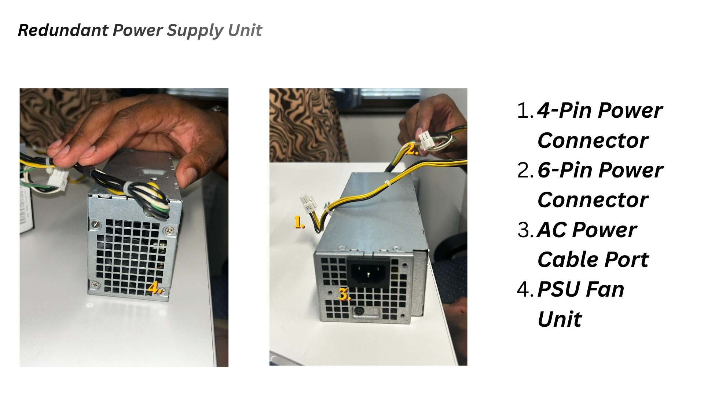
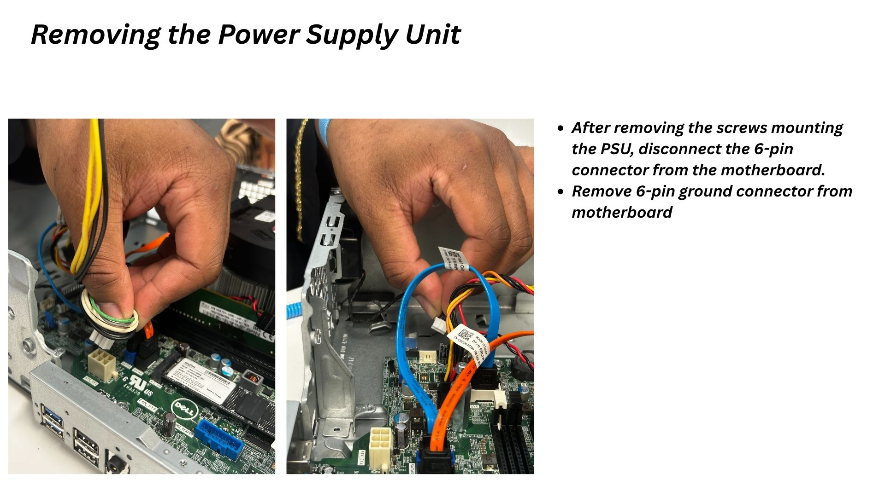
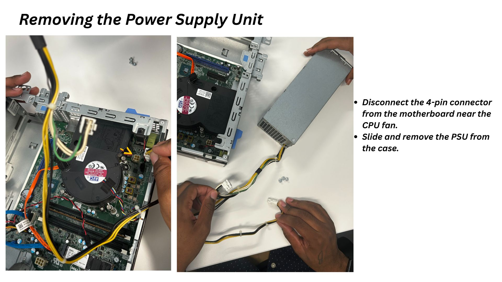

Multimedia Specialist | IT Support Specialist
Looking to apply skills in multimedia to the tech industry.
Guide: Launching an EC2 Server for a Shopping Web App
Read my recently added EC2 Server Creation Guide directly on this page, or open it in a new tab.
About Me
Skills & Expertise
Hardware & PC Components
- Peripheral devices
- Cable management
- BIOS/UEFI
- Mobile devices
Networking Fundamentals
- IP addressing
- DNS / DHCP / TCP/IP
- LAN/WAN concepts
- Command-line prompts
Operating Systems
- Windows
- macOS
- Linux
- ChromeOS / Android
Selected Projects
- Educational how-to presentation on device settings
- Deconstructing and rebuilding PC tower units
- Informational how-to guides on removing power supply units
- Step-by-step guide on launching an EC2 server for a shopping web app
- Guide to understanding TCP/IP port numbers and configurations
Redundant Power Supply Unit (PSU) Removal Guide
Wilkens Exavier
Overview
This guide provides step-by-step instructions for safely removing a redundant power supply unit from your system.
Safety first: Shut the system down, unplug the AC power cable, and allow the unit to cool before beginning. Handle all internal components carefully.
Power Supply Unit Components

1. 4-Pin Power Connector — Main power connector to the motherboard
2. 6-Pin Power Connector — Secondary power connector
3. AC Power Cable Port — Power input from the wall outlet
4. PSU Fan Unit — Cooling fan for the power supply
Removal Steps

Step 1: Disconnect Power Connectors
- Remove the screws mounting the PSU.
- Carefully disconnect the 6-pin connector from the motherboard.
- Remove the 6-pin ground connector from the motherboard.
- Confirm the system is powered down and unplugged before continuing.

Step 2: Remove PSU from Case
- Locate and disconnect the 4-pin connector from the motherboard near the CPU fan.
- Carefully slide the PSU out of the case.
- Handle it carefully to avoid damaging internal components.
- Set the PSU aside in a safe location.